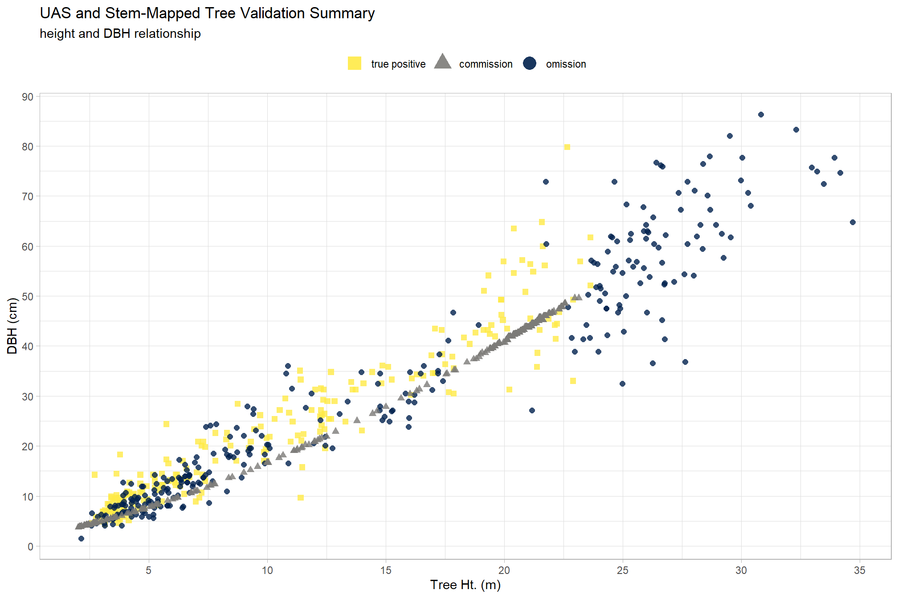
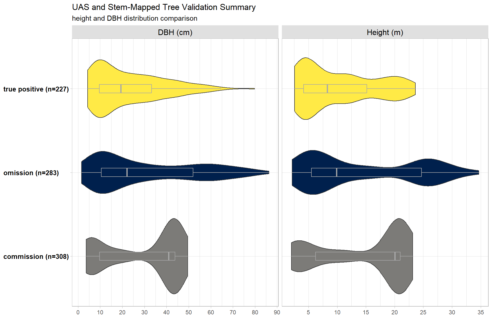
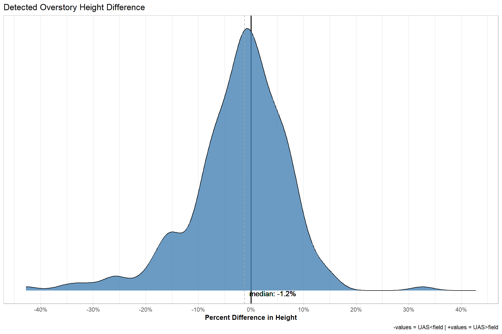
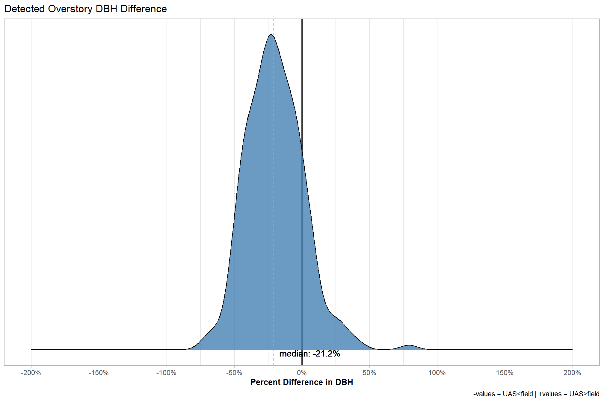

Section 5 Field Validation
This section combines the SfM-derived tree locations with stem-mapped tree locations from field sampling.
Tinkham and Swayze (2021; p.6) describe a methodology for matching UAS detected trees with stem mapped trees identified via traditional field survey methods. Note, detected trees in the excerpt below references UAS detected trees while survey trees references field-based stem mapped trees:
Each of the detected tree outputs was matched with survey tree locations through an iterative process. Iteratively, a detected tree was selected, and all survey trees within a 3 m radius and 10% height of the detected tree were identified. If a survey tree met both the location and height precision requirements, it was considered a true positive (TP) detection, and both the survey and detected trees were removed from further matching. However, if no match was made, the detected tree was considered a commission (Co) and removed from further matching. This process was repeated until all detected trees were classified as true positive or commission, with all unmatched survey trees classified as omission (Om). Overall tree detection performance was described using the F-score metric.
The F-score incorporates true positive, commission, and omission rates to determine how well the UAS detected trees represent the field-based stem mapped trees. As a measure of predictive performance, the highest possible value of an F-score is 1.0, indicating perfect precision and recall, and the lowest possible value is 0, if either precision or recall are zero.
\[ \textrm{F-score} = 2 \times \frac{\bigl(\frac{TP}{TP+Om} \times \frac{TP}{TP+Co} \bigr)}{\bigl(\frac{TP}{TP+Om} + \frac{TP}{TP+Co} \bigr)} \]
The process to match UAS detected trees to field stem mapped trees implemented here is slightly different than the process described above. To match the data parametrization from the UAS point cloud processing workflow, only stem-mapped trees above 2 m were considered for analysis. Each UAS detected tree was matched with stem-mapped tree locations that were within a 3 m radius and 2 m height of the UAS detected tree. The matched UAS and stem-mapped tree pairs were jointly compared (rather than iteratively) to select the pair that minimized the height difference for both the stem-mapped tree and the UAS detected tree to ensure that only one UAS detected tree was selected for each stem-mapped tree. If more than one UAS detected tree had the same height difference to a stem-mapped tree, the UAS detected tree spatially nearest to the stem-mapped tree was selected as the match. These UAS detected trees with a paired stem-mapped tree after this filtering process were considered true positive (\(TP\)) detections.
To determine UAS detected tree commissions (i.e. UAS detected trees within the overstory plot for which there was no stem-mapped tree pair; \(Co\)) this analysis used the 2023-06 BHEF overstory field survey plot center and plot radius with a minimum DBH of 5 in (12.69 cm) as only trees above this size were sampled as part of the overstory survey. UAS detected trees within this radius with an estimated DBH over 5 in (12.69 cm) that did not have a matched stem-mapped tree pair were considered commissions (\(Co\)). The 2023-06 BHEF field surveys used \(\frac{1}{10}\) acre (404.686 m2) plots with a 37.24 ft (11.35 m) radius for overstory sampling and \(\frac{1}{400}\) acre (10.117 m2) plots with a 5.89 ft (1.795 m) radius for regeneration sampling. All unmatched stem-mapped survey trees were classified as omissions (\(Om\)).
5.1 Setup
Update the ptcld_processing_data created in this section
# list of study sites with completed uas data
study_site_list = ptcld_processing_data$study_site %>% unique() %>% toupper()
# list of field validation data
validation_data =
list.files(
"../data/field_validation"
, pattern = "\\.gpkg$", full.names = T
) %>%
normalizePath() %>%
dplyr::as_tibble() %>%
dplyr::rename(validation_file_full_path=1) %>%
dplyr::mutate(
study_site = validation_file_full_path %>%
toupper() %>%
stringr::str_extract(pattern = paste(study_site_list, collapse = "|"))
) %>%
dplyr::filter(study_site %in% study_site_list) %>%
dplyr::group_by(study_site) %>%
dplyr::filter(dplyr::row_number() == 1) %>%
dplyr::ungroup()
# what about the field plot boundary?
validation_plots = sf::st_read("../data/field_validation/Field_Data_Boundary.shp") %>%
dplyr::rename_with(tolower) %>%
dplyr::mutate(
study_site = site %>%
toupper() %>%
stringr::str_extract(pattern = paste(study_site_list, collapse = "|"))
) %>%
dplyr::filter(study_site %in% study_site_list) %>%
dplyr::group_by(study_site) %>%
dplyr::filter(dplyr::row_number() == 1) %>%
dplyr::ungroup()## Reading layer `Field_Data_Boundary' from data source
## `C:\Data\usfs\metashape_testing\data\field_validation\Field_Data_Boundary.shp'
## using driver `ESRI Shapefile'
## Simple feature collection with 5 features and 4 fields
## Geometry type: POLYGON
## Dimension: XY
## Bounding box: xmin: -157287.6 ymin: 4068511 xmax: 608828.5 ymax: 4892131
## Projected CRS: WGS 84 / UTM zone 13N# where is the uas processed data?
ptcld_processing_data =
ptcld_processing_data %>%
dplyr::mutate(
processed_data_dir = dirname(tracking_file_full_path)
, processing_id = dplyr::row_number()
)where are these validation plots and what do they look like?
## Rows: 5
## Columns: 6
## $ id <dbl> NA, NA, NA, NA, NA
## $ site <chr> "WA85_02", "SQ09_02", "N1", "Kaibab_Low", "Kaibab_High"
## $ acres <dbl> 2.476617, 2.476617, 3.911949, 5.059504, 4.264751
## $ hectares <dbl> 1.002679, 1.002679, 1.583785, 2.048382, 1.726620
## $ geometry <POLYGON [m]> POLYGON ((608678.6 4892131,..., POLYGON ((608720.2 4889252,…
## $ study_site <chr> "WA85_02", "SQ09_02", "N1", "KAIBAB_LOW", "KAIBAB_HIGH"5.2 Data Load Functions
field validation data
# function to read field data once per site
read_field_data <- function(my_study_site) {
d = sf::st_read(
validation_data %>%
dplyr::filter(study_site == my_study_site) %>%
dplyr::pull(validation_file_full_path)
) %>%
dplyr::mutate(
study_site = my_study_site
) %>%
dplyr::rename_with(tolower) %>%
dplyr::rename(
field_dbh_cm = dbh_cm
, field_tree_height_m = ht_m
) %>%
sf::st_set_geometry("geometry") %>%
dplyr::filter(
!is.na(field_dbh_cm)
& !is.na(field_tree_height_m)
& sf::st_is_valid(geometry)
# only keep trees that are above height threshold used for uas processing
& field_tree_height_m >= min(ptcld_processing_data$sttng_minimum_tree_height_m)
# & field_dbh_cm >= min_tree_dbh_cm # if know min field dbh for field sampling
)
# keep only trees within sampling plot
d %>%
sf::st_intersection(
validation_plots %>%
dplyr::filter(study_site == my_study_site) %>%
dplyr::mutate(intersected_with_plot_geom = T) %>%
dplyr::select(intersected_with_plot_geom) %>%
sf::st_transform(sf::st_crs(d))
) %>%
dplyr::mutate(
field_tree_id = dplyr::row_number()
, tree_utm_x = sf::st_coordinates(geometry)[,1] #lon
, tree_utm_y = sf::st_coordinates(geometry)[,2] #lat
) %>%
dplyr::relocate(field_tree_id)
}uas data
# function finds uas tree list
# reads it
# estimates linear model if not already used for DBH
read_uas_data = function(my_processing_id, my_crs = NULL) {
# where is this file?
fnm = ptcld_processing_data %>%
dplyr::filter(
processing_id == my_processing_id
) %>%
dplyr::mutate(
fnm = paste0(
processed_data_dir
, "/"
, file_name
, "_final_detected_tree_tops.gpkg"
)
) %>%
dplyr::pull(fnm)
if(file.exists(fnm)){
# read it
dta = sf::st_read(fnm) %>%
dplyr::mutate(
processing_id = my_processing_id
) %>%
dplyr::rename_with(tolower) %>%
sf::st_set_geometry("geometry")
# transform
if(is.null(my_crs)){
tcrs = sf::st_crs(dta)
}else{tcrs = my_crs}
dta = dta %>%
sf::st_transform(tcrs)
#################
# estimate linear model if not already used for DBH
#################
if(
# is there sufficient training data?
dta %>%
dplyr::filter(is_training_data == T) %>%
nrow() > 10 &
# was rf model used?
ptcld_processing_data %>%
dplyr::filter(processing_id == my_processing_id) %>%
dplyr::pull(sttng_local_dbh_model) %>%
tolower() == "rf"
){
# Gamma distribution for strictly positive response variable dbh
stem_prediction_model = brms::brm(
formula = dbh_cm ~ 1 + tree_height_m
, data = dta %>%
dplyr::filter(is_training_data==T) %>%
dplyr::select(dbh_cm, tree_height_m)
, family = brms::brmsfamily("Gamma", link = "log")
, prior = c(prior(gamma(0.01, 0.01), class = shape))
, iter = 4000, warmup = 2000, chains = 4
, cores = lasR::half_cores()
, file = ptcld_processing_data %>%
dplyr::filter(processing_id == my_processing_id) %>%
dplyr::mutate(
fff = paste0(
processed_data_dir
, "/"
, file_name
, "_local_dbh_height_model"
)
) %>%
dplyr::pull(fff)
# , file_refit = "on_change"
)
#################
# prediction data
#################
pred_temp = predict(stem_prediction_model, dta) %>%
dplyr::as_tibble() %>%
dplyr::pull(1)
# add to data
dta = dta %>%
dplyr::mutate(
rf_dbh_cm = dbh_cm
, pred_dbh_cm = pred_temp
, lin_dbh_cm = ifelse(is_training_data==T, dbh_cm, pred_dbh_cm)
) %>%
dplyr::select(-c(pred_dbh_cm)) %>%
# pick a dbh to use
dplyr::mutate(
dbh_cm = lin_dbh_cm
, dbh_m = dbh_cm/100
, radius_m = dbh_m/2
, basal_area_m2 = pi * (radius_m)^2
, basal_area_ft2 = basal_area_m2 * 10.764
)
}else if(# is there sufficient training data?
dta %>%
dplyr::filter(is_training_data == T) %>%
nrow() <= 10
){
# the regional model was used which would result in the same est for rf and lin
dta = dta %>%
dplyr::mutate(
rf_dbh_cm = dbh_cm
, lin_dbh_cm = dbh_cm
)
}else{
# linear model was already used and no rf pred
# could update this to estimate rf model if missing...#nextyear
dta = dta %>%
dplyr::mutate(
rf_dbh_cm = as.numeric(NA)
, lin_dbh_cm = dbh_cm
)
}
return(dta)
}else{stop("could not find file: ", fnm)}
}5.3 Validation Data Functions
5.3.1 True Positive Identification
The UAS detected and stem-mapped tree pairs identified in this filtering process (detailed above) were considered true positive (\(TP\)) detections.
## BUFFER THE UAS TREES AND SPATIALLY MATCH FIELD TREES BASED ON THAT BUFFER
true_positive_trees_fn = function(uas_data, field_data, max_dist_m = 3, max_height_error_m = 2){
## get FIELD trees within radius OF UAS TREES
potential_tree_pairs_temp = uas_data %>%
dplyr::select(treeid, tree_height_m) %>%
# buffer point
sf::st_buffer(max_dist_m) %>%
# spatial join with all FIELD tree points
sf::st_join(
field_data %>%
dplyr::select(
field_tree_id, field_tree_height_m
, tree_utm_x, tree_utm_y
)
, join = sf::st_intersects
, left = F # performs inner join to only keep uas trees with a match
) %>%
# calculate height difference
dplyr::mutate(
height_diff_m = abs(tree_height_m-field_tree_height_m)
, height_diff_pct = height_diff_m/field_tree_height_m
) %>%
# removes tree pairs that are outside of the allowable error
# dplyr::filter(height_diff_pct <= max_height_error_pct) %>%
dplyr::filter(height_diff_m <= max_height_error_m) %>%
dplyr::select(-c(height_diff_m)) %>%
dplyr::relocate(treeid, field_tree_id)
## apply pair selection criteria if there are potential tree pairs
if(nrow(potential_tree_pairs_temp)>0){
## calculate row by row distances and height differences
potential_tree_pairs_temp = potential_tree_pairs_temp %>%
# this is the position of the uas tree
sf::st_centroid() %>%
sf::st_set_geometry("geom1") %>%
dplyr::bind_cols(
potential_tree_pairs_temp %>%
sf::st_drop_geometry() %>%
dplyr::select("tree_utm_x", "tree_utm_y") %>%
# this is the position of the field tree
sf::st_as_sf(
coords = c("tree_utm_x", "tree_utm_y"), crs = sf::st_crs(uas_data)
) %>%
sf::st_set_geometry("geom2")
) %>%
dplyr::mutate(
distance_m = sf::st_distance(geom1, geom2, by_element = T) %>% as.numeric()
) %>%
sf::st_drop_geometry() %>%
dplyr::select(-c(tree_utm_x, tree_utm_y, geom2))
## define function to select the best tree pair
select_best_tree_pair_fn <- function(df) {
df %>%
dplyr::group_by(field_tree_id) %>%
dplyr::arrange(field_tree_id, height_diff_pct, distance_m, desc(tree_height_m), treeid) %>%
dplyr::mutate(
# at the field tree level...the number of uas trees
n_uas_trees = dplyr::n()
# at the field tree level...
# the closest uas tree in height tie breaker distance, uas_tree_height_m, id
, rank_within_field_tree = dplyr::row_number()
) %>%
dplyr::group_by(treeid) %>%
dplyr::arrange(treeid, height_diff_pct, distance_m, desc(field_tree_height_m), field_tree_id) %>%
dplyr::mutate(
# at the uas tree level...the number of field trees
n_field_trees = dplyr::n()
# at the field tree level...
# the closest field tree in height tie breaker distance, uas_tree_height_m, id
, rank_within_uas_tree = dplyr::row_number()
) %>%
dplyr::ungroup() %>%
# select the uas-field tree pair with the minimum height difference
dplyr::filter(
rank_within_field_tree == 1
& rank_within_uas_tree == 1
) %>%
# remove columns
dplyr::select(
-c(tidyselect::starts_with("rank_"), tidyselect::starts_with("n_"))
)
}
## first filter for tree pairs
true_positive_trees = select_best_tree_pair_fn(potential_tree_pairs_temp)
##remove matches from potential tree pairs
potential_tree_pairs_temp = potential_tree_pairs_temp %>%
dplyr::filter(
!(treeid %in% true_positive_trees$treeid)
& !(field_tree_id %in% true_positive_trees$field_tree_id)
)
## keep filtering for best pair until no unique pairs remain
while(nrow(potential_tree_pairs_temp)>0) {
# keep filtering for best pair until no unique pairs remain
true_positive_trees = true_positive_trees %>%
dplyr::bind_rows(
select_best_tree_pair_fn(potential_tree_pairs_temp)
)
#remove matches from potential tree pairs
potential_tree_pairs_temp = potential_tree_pairs_temp %>%
dplyr::filter(
!(treeid %in% true_positive_trees$treeid)
& !(field_tree_id %in% true_positive_trees$field_tree_id)
)
}
## rename columns and flag
true_positive_trees = true_positive_trees %>%
dplyr::rename(
uas_tree_height_m = tree_height_m
, uas_tree_id = treeid
, field_uas_distance_m = distance_m
) %>%
dplyr::mutate(
field_uas_group = "true positive"
)
}else{ # if there are spatially matched trees
true_positive_trees = dplyr::tibble(
uas_tree_id = as.character(NA)
, field_tree_id = as.character(NA)
, uas_tree_height_m = as.numeric(NA)
, field_tree_height_m = as.numeric(NA)
, height_diff_pct = as.numeric(NA)
, field_uas_distance_m = as.numeric(NA)
, field_uas_group = as.character(NA)
)
}
# return
return(true_positive_trees)
}5.3.2 Combine with Commission and Omission
To determine UAS detected tree commissions (i.e. UAS detected trees within the overstory plot for which there was no stem-mapped tree pair; \(Co\)) this analysis used the 2023-06 BHEF overstory field survey plot center and plot radius of 11.35 m. UAS detected trees within this radius with an estimated DBH over 5 in (12.69 cm) that did not have a matched stem-mapped tree pair were considered commissions (\(Co\)).
Omissions (\(Om\)) are stem-mapped trees without a UAS detected tree match.
field_uas_comparison_fn = function(uas_data, field_data, true_positive_trees, plot_data, overstory_ht_m = 7){
field_uas_comparison = dplyr::bind_rows(
## true positive
true_positive_trees %>%
dplyr::mutate(field_tree_id = as.numeric(field_tree_id))
## omission
, field_data %>%
sf::st_drop_geometry() %>%
dplyr::select(
field_tree_id, field_tree_height_m
) %>%
dplyr::anti_join(
true_positive_trees %>%
dplyr::mutate(field_tree_id = as.numeric(field_tree_id))
, by = dplyr::join_by(field_tree_id)
) %>%
dplyr::mutate(
field_uas_group = "omission"
)
## commission
, plot_data %>%
sf::st_transform(sf::st_crs(uas_data)) %>%
dplyr::select(study_site) %>%
# join with uas tree points
sf::st_join(
uas_data %>%
dplyr::filter(
!treeid %in% true_positive_trees$uas_tree_id
) %>%
dplyr::select(treeid) %>%
dplyr::rename(uas_tree_id=treeid)
, join = sf::st_intersects
, left = F # performs inner join to only keep uas trees and plots with a match
) %>%
dplyr::select(-c(study_site)) %>%
sf::st_drop_geometry() %>%
dplyr::mutate(
field_uas_group = "commission"
)
) %>%
dplyr::filter(!is.na(field_uas_group) & field_uas_group!="") %>%
# attach uas data
dplyr::left_join(
uas_data %>%
sf::st_set_geometry("geometry") %>%
dplyr::mutate(
uas_tree_utm_x = sf::st_coordinates(geometry)[,1] #lon
, uas_tree_utm_y = sf::st_coordinates(geometry)[,2] #lat
) %>%
sf::st_drop_geometry() %>%
dplyr::select(treeid, tree_height_m, dbh_cm, uas_tree_utm_x, uas_tree_utm_y) %>%
dplyr::rename(
uas_tree_id = treeid
, uas_tree_height_m = tree_height_m
, uas_dbh_cm = dbh_cm
)
, by = dplyr::join_by(uas_tree_id)
) %>%
# attach field data
dplyr::left_join(
field_data %>%
sf::st_drop_geometry() %>%
dplyr::select(
field_tree_id, field_tree_height_m, field_dbh_cm
, tree_utm_x, tree_utm_y
) %>%
dplyr::rename(
field_tree_utm_x = tree_utm_x
, field_tree_utm_y = tree_utm_y
)
, by = dplyr::join_by(field_tree_id)
) %>%
# update data
dplyr::mutate(
uas_tree_height_m = uas_tree_height_m.y
, field_tree_height_m = field_tree_height_m.y
, field_uas_group = factor(
field_uas_group
, ordered = T
, levels = c(
"true positive"
, "commission"
, "omission"
)
) %>% forcats::fct_rev()
, dbh_diff_cm = uas_dbh_cm - field_dbh_cm
, tree_height_diff_m = uas_tree_height_m - field_tree_height_m
, dbh_diff_pct = dbh_diff_cm/field_dbh_cm
, height_diff_pct = tree_height_diff_m/field_tree_height_m
, abs_dbh_diff_pct = abs(dbh_diff_pct)
, abs_height_diff_pct = abs(height_diff_pct)
# determine overstory/understory
, overstory_understory_grp = dplyr::case_when(
dplyr::coalesce(field_tree_height_m, uas_tree_height_m) >= overstory_ht_m ~ "overstory"
, dplyr::coalesce(field_tree_height_m, uas_tree_height_m) < overstory_ht_m ~ "understory"
, T ~ "error"
) %>% factor()
# attach identifying data
, study_site = uas_data$study_site[1]
, file_name = uas_data$file_name[1]
, software = uas_data$software[1]
, overstory_ht_m = overstory_ht_m
) %>%
dplyr::relocate(field_uas_group) %>%
dplyr::select(-c(tidyselect::ends_with(".x"), tidyselect::ends_with(".y")))
# # convert to imperial units
# calc_imperial_units_fn()
# return
return(field_uas_comparison)
}5.3.3 Full validation function
function to write comparison data and return aggregate metrics when passed a ptcld_processing_data$processing_id
function returns:
- write full validation tree list to disk
- update ptcld_processing_data with metrics for testing:
- f-score
- height comparison metrics (mae, mape, smape, mse, rmse)
- dbh comparison metrics (mae, mape, smape, mse, rmse)
- path to full validation tree list written to disk
#####################################################
# function to map over each file for a particular study site
#####################################################
# function for a file name identified by processing_id in ptcld_processing_data
validate_file_fn = function(p_id, fld_dta, plt_dta){
# tree list file name
tl_fnm = paste0(
ptcld_processing_data %>%
dplyr::filter(processing_id == p_id) %>%
dplyr::pull(processed_data_dir)
, "/"
, ptcld_processing_data %>%
dplyr::filter(processing_id == p_id) %>%
dplyr::pull(file_name)
, "_field_uas_comparison_data.csv"
)
# brms model
brms_fnm = paste0(
ptcld_processing_data %>%
dplyr::filter(processing_id == p_id) %>%
dplyr::pull(processed_data_dir)
, "/"
, ptcld_processing_data %>%
dplyr::filter(processing_id == p_id) %>%
dplyr::pull(file_name)
, "_local_dbh_height_model.rds"
)
# check it
if(file.exists(tl_fnm) & file.exists(brms_fnm)){
# read it
field_uas_comparison = readr::read_csv(tl_fnm)
}else{
# uas_data
u_dta = read_uas_data(
my_processing_id = p_id
, my_crs = sf::st_crs(fld_dta)
)
# true positives
tp_trees = true_positive_trees_fn(uas_data = u_dta, field_data = fld_dta)
# field uas comparison
field_uas_comparison = field_uas_comparison_fn(
uas_data = u_dta
, field_data = fld_dta
, true_positive_trees = tp_trees
, plot_data = plt_dta
) %>%
# attach id information
dplyr::bind_cols(
ptcld_processing_data %>%
dplyr::filter(processing_id == p_id) %>%
dplyr::select(
processing_id, study_site, file_name, software
, depth_maps_generation_quality
, depth_maps_generation_filtering_mode
, processing_attribute3
, processed_data_dir
)
)
# write it
write.csv(
field_uas_comparison
, tl_fnm
, row.names = F
)
}
############################################
# aggregate field_uas_comparison for return
############################################
return_dta =
ptcld_processing_data %>%
dplyr::filter(processing_id == p_id) %>%
############################################
# overall statistics
############################################
# attach f score
dplyr::bind_cols(
# blank data in case missing
dplyr::tibble(field_uas_group = c("tp", "co", "om")) %>%
dplyr::left_join(
field_uas_comparison %>%
dplyr::count(field_uas_group) %>%
dplyr::mutate(field_uas_group = dplyr::case_when(
field_uas_group == "true positive" ~ "tp"
, field_uas_group == "commission" ~ "co"
, field_uas_group == "omission" ~ "om"
))
, by = dplyr::join_by(field_uas_group)
) %>%
dplyr::mutate(n = ifelse(is.na(n),0,n)) %>%
tidyr::pivot_wider(
names_from = field_uas_group
, values_from = n
, values_fill = 0
) %>%
dplyr::mutate(
f_score = dplyr::coalesce(
2 * ( (tp/(tp+om)) * (tp/(tp+co)) ) / ( (tp/(tp+om)) + (tp/(tp+co)) )
, 0
)
) %>%
dplyr::rename(
true_positive_n_trees = tp
, commission_n_trees = co
, omission_n_trees = om
) %>%
dplyr::ungroup()
) %>%
# attach summary error metrics
dplyr::bind_cols(
field_uas_comparison %>%
dplyr::filter(field_uas_group=="true positive") %>%
dplyr::ungroup() %>%
# thx Metrics pkg!!
dplyr::summarise(
# tree_height_m
tree_height_m_mae = Metrics::mae(field_tree_height_m, uas_tree_height_m)
, tree_height_m_mape = Metrics::mape(field_tree_height_m, uas_tree_height_m)
, tree_height_m_smape = Metrics::smape(field_tree_height_m, uas_tree_height_m)
, tree_height_m_mse = Metrics::mse(field_tree_height_m, uas_tree_height_m)
, tree_height_m_rmse = Metrics::rmse(field_tree_height_m, uas_tree_height_m)
# dbh_cm
, dbh_cm_mae = Metrics::mae(field_dbh_cm, uas_dbh_cm)
, dbh_cm_mape = Metrics::mape(field_dbh_cm, uas_dbh_cm)
, dbh_cm_smape = Metrics::smape(field_dbh_cm, uas_dbh_cm)
, dbh_cm_mse = Metrics::mse(field_dbh_cm, uas_dbh_cm)
, dbh_cm_rmse = Metrics::rmse(field_dbh_cm, uas_dbh_cm)
)
) %>%
############################################
# overstory/understory statistics
############################################
# attach f score
dplyr::bind_cols(
# blank data in case missing
tidyr::crossing(
field_uas_group = c("tp", "co", "om")
, overstory_understory_grp = c("overstory", "understory")
) %>%
dplyr::left_join(
field_uas_comparison %>%
dplyr::count(field_uas_group, overstory_understory_grp) %>%
dplyr::mutate(field_uas_group = dplyr::case_when(
field_uas_group == "true positive" ~ "tp"
, field_uas_group == "commission" ~ "co"
, field_uas_group == "omission" ~ "om"
))
, by = dplyr::join_by(field_uas_group, overstory_understory_grp)
) %>%
dplyr::mutate(n = ifelse(is.na(n),0,n)) %>%
tidyr::pivot_wider(
names_from = field_uas_group
, values_from = n
, values_fill = 0
) %>%
dplyr::mutate(
f_score = dplyr::coalesce(
2 * ( (tp/(tp+om)) * (tp/(tp+co)) ) / ( (tp/(tp+om)) + (tp/(tp+co)) )
, 0
)
) %>%
dplyr::rename(
true_positive_n_trees = tp
, commission_n_trees = co
, omission_n_trees = om
) %>%
dplyr::ungroup() %>%
tidyr::pivot_wider(
names_from = overstory_understory_grp
, values_from = -c(overstory_understory_grp)
, values_fill = 0
, names_glue = "{overstory_understory_grp}_{.value}"
)
) %>%
# attach summary error metrics
dplyr::bind_cols(
field_uas_comparison %>%
dplyr::filter(field_uas_group=="true positive") %>%
dplyr::group_by(overstory_understory_grp) %>%
# thx Metrics pkg!!
dplyr::summarise(
# tree_height_m
tree_height_m_mae = Metrics::mae(field_tree_height_m, uas_tree_height_m)
, tree_height_m_mape = Metrics::mape(field_tree_height_m, uas_tree_height_m)
, tree_height_m_smape = Metrics::smape(field_tree_height_m, uas_tree_height_m)
, tree_height_m_mse = Metrics::mse(field_tree_height_m, uas_tree_height_m)
, tree_height_m_rmse = Metrics::rmse(field_tree_height_m, uas_tree_height_m)
# dbh_cm
, dbh_cm_mae = Metrics::mae(field_dbh_cm, uas_dbh_cm)
, dbh_cm_mape = Metrics::mape(field_dbh_cm, uas_dbh_cm)
, dbh_cm_smape = Metrics::smape(field_dbh_cm, uas_dbh_cm)
, dbh_cm_mse = Metrics::mse(field_dbh_cm, uas_dbh_cm)
, dbh_cm_rmse = Metrics::rmse(field_dbh_cm, uas_dbh_cm)
) %>%
dplyr::ungroup() %>%
tidyr::pivot_wider(
names_from = overstory_understory_grp
, values_from = -c(overstory_understory_grp)
, values_fill = 0
, names_glue = "{overstory_understory_grp}_{.value}"
)
) %>%
# where is the tree list ?
dplyr::mutate(
validation_file_full_path = tl_fnm
# what is this overstory/understory?
, overstory_ht_m = field_uas_comparison$overstory_ht_m[1]
)
# return
return(return_dta)
}check validation function
validation_temp =
validate_file_fn(
p_id = ptcld_processing_data %>%
dplyr::filter(study_site == study_site_list[1]) %>%
dplyr::pull(processing_id) %>%
.[1]
, fld_dta = read_field_data(study_site_list[1])
, plt_dta = validation_plots %>%
dplyr::filter(study_site == study_site_list[1])
)## Rows: 1
## Columns: 77
## $ tracking_file_full_path <chr> "D:\\SfM_Software_Comparison\\Met…
## $ software <chr> "METASHAPE"
## $ study_site <chr> "KAIBAB_HIGH"
## $ processing_attribute1 <chr> "HIGH"
## $ processing_attribute2 <chr> "AGGRESSIVE"
## $ processing_attribute3 <chr> NA
## $ file_name <chr> "HIGH_AGGRESSIVE"
## $ number_of_points <int> 52974294
## $ las_area_m2 <dbl> 86661.27
## $ timer_tile_time_mins <dbl> 0.636007
## $ timer_class_dtm_norm_chm_time_mins <dbl> 3.655956
## $ timer_treels_time_mins <dbl> 8.906527
## $ timer_itd_time_mins <dbl> 0.02202115
## $ timer_competition_time_mins <dbl> 0.1059074
## $ timer_estdbh_time_mins <dbl> 0.02290262
## $ timer_silv_time_mins <dbl> 0.01256553
## $ timer_total_time_mins <dbl> 13.36189
## $ sttng_input_las_dir <chr> "D:/Metashape_Testing_2024"
## $ sttng_use_parallel_processing <lgl> FALSE
## $ sttng_desired_chm_res <dbl> 0.25
## $ sttng_max_height_threshold_m <int> 60
## $ sttng_minimum_tree_height_m <int> 2
## $ sttng_dbh_max_size_m <int> 2
## $ sttng_local_dbh_model <chr> "rf"
## $ sttng_user_supplied_epsg <lgl> NA
## $ sttng_accuracy_level <int> 2
## $ sttng_pts_m2_for_triangulation <int> 20
## $ sttng_normalization_with <chr> "triangulation"
## $ sttng_competition_buffer_m <int> 5
## $ depth_maps_generation_quality <ord> high
## $ depth_maps_generation_filtering_mode <ord> aggressive
## $ processed_data_dir <chr> "D:/SfM_Software_Comparison/Metas…
## $ processing_id <int> 1
## $ true_positive_n_trees <int> 229
## $ commission_n_trees <int> 173
## $ omission_n_trees <int> 772
## $ f_score <dbl> 0.3264433
## $ tree_height_m_mae <dbl> 0.787361
## $ tree_height_m_mape <dbl> 0.06624939
## $ tree_height_m_smape <dbl> 0.06776453
## $ tree_height_m_mse <dbl> 0.9842433
## $ tree_height_m_rmse <dbl> 0.9920904
## $ dbh_cm_mae <dbl> 11.5553
## $ dbh_cm_mape <dbl> 0.9053919
## $ dbh_cm_smape <dbl> 0.4586408
## $ dbh_cm_mse <dbl> 168.5157
## $ dbh_cm_rmse <dbl> 12.98136
## $ overstory_commission_n_trees <int> 141
## $ understory_commission_n_trees <int> 32
## $ overstory_omission_n_trees <int> 558
## $ understory_omission_n_trees <int> 214
## $ overstory_true_positive_n_trees <int> 185
## $ understory_true_positive_n_trees <int> 44
## $ overstory_f_score <dbl> 0.3461179
## $ understory_f_score <dbl> 0.2634731
## $ overstory_tree_height_m_mae <dbl> 0.8201433
## $ understory_tree_height_m_mae <dbl> 0.6495266
## $ overstory_tree_height_m_mape <dbl> 0.04662933
## $ understory_tree_height_m_mape <dbl> 0.1487428
## $ overstory_tree_height_m_smape <dbl> 0.04589942
## $ understory_tree_height_m_smape <dbl> 0.1596974
## $ overstory_tree_height_m_mse <dbl> 1.062376
## $ understory_tree_height_m_mse <dbl> 0.65573
## $ overstory_tree_height_m_rmse <dbl> 1.030716
## $ understory_tree_height_m_rmse <dbl> 0.8097715
## $ overstory_dbh_cm_mae <dbl> 10.10785
## $ understory_dbh_cm_mae <dbl> 17.64118
## $ overstory_dbh_cm_mape <dbl> 0.4071769
## $ understory_dbh_cm_mape <dbl> 3.000159
## $ overstory_dbh_cm_smape <dbl> 0.3089094
## $ understory_dbh_cm_smape <dbl> 1.088193
## $ overstory_dbh_cm_mse <dbl> 132.7215
## $ understory_dbh_cm_mse <dbl> 319.0139
## $ overstory_dbh_cm_rmse <dbl> 11.52048
## $ understory_dbh_cm_rmse <dbl> 17.86096
## $ validation_file_full_path <chr> "D:/SfM_Software_Comparison/Metas…
## $ overstory_ht_m <dbl> 7# output file is the same thing as field_uas_comparison_fn
validation_temp$validation_file_full_path %>%
readr::read_csv() %>%
dplyr::glimpse()## Rows: 1,174
## Columns: 28
## $ field_uas_group <chr> "true positive", "true positive",…
## $ uas_tree_id <chr> "1000_-157206.9_4068542.9", "1020…
## $ field_tree_id <dbl> 96, 82, 87, 42, 77, 85, 51, 56, 4…
## $ height_diff_pct <dbl> -0.065845684, -0.014773812, 0.009…
## $ field_uas_distance_m <dbl> 0.5527370, 1.7755352, 2.1687497, …
## $ uas_dbh_cm <dbl> 31.85495, 42.68784, 37.65799, 43.…
## $ uas_tree_utm_x <dbl> 380396.4, 380441.5, 380403.7, 380…
## $ uas_tree_utm_y <dbl> 4044246, 4044246, 4044240, 404423…
## $ field_dbh_cm <dbl> 25.908, 33.020, 28.448, 34.290, 4…
## $ field_tree_utm_x <dbl> 380396.4, 380441.9, 380403.7, 380…
## $ field_tree_utm_y <dbl> 4044246, 4044244, 4044242, 404423…
## $ uas_tree_height_m <dbl> 10.851, 19.284, 15.638, 20.122, 2…
## $ field_tree_height_m <dbl> 11.615854, 19.573171, 15.487805, …
## $ dbh_diff_cm <dbl> 5.946947, 9.667837, 9.209988, 9.5…
## $ tree_height_diff_m <dbl> -0.7648538, -0.2891703, 0.1501947…
## $ dbh_diff_pct <dbl> 0.22954097, 0.29278732, 0.3237481…
## $ abs_dbh_diff_pct <dbl> 0.22954097, 0.29278732, 0.3237481…
## $ abs_height_diff_pct <dbl> 0.065845684, 0.014773812, 0.00969…
## $ overstory_understory_grp <chr> "overstory", "overstory", "overst…
## $ overstory_ht_m <dbl> 7, 7, 7, 7, 7, 7, 7, 7, 7, 7, 7, …
## $ processing_id <dbl> 1, 1, 1, 1, 1, 1, 1, 1, 1, 1, 1, …
## $ study_site <chr> "KAIBAB_HIGH", "KAIBAB_HIGH", "KA…
## $ file_name <chr> "HIGH_AGGRESSIVE", "HIGH_AGGRESSI…
## $ software <chr> "METASHAPE", "METASHAPE", "METASH…
## $ depth_maps_generation_quality <chr> "high", "high", "high", "high", "…
## $ depth_maps_generation_filtering_mode <chr> "aggressive", "aggressive", "aggr…
## $ processing_attribute3 <lgl> NA, NA, NA, NA, NA, NA, NA, NA, N…
## $ processed_data_dir <chr> "D:/SfM_Software_Comparison/Metas…5.4 Full pipeline function
function to map over study sites represented in ptcld_processing_data
# function to map over study sites represented in ptcld_processing_data
# set up in a way so that only have to read field data from disk once and
# perform validation for each uas data represented for that site in ptcld_processing_data
# Returns:
# 1) write full validation tree list to disk
# 2) update ptcld_processing_data with metrics for testing:
# f-score
# ht rmse
# dbh rmse
# path to validation tree list
full_validation_fn = function(study_site_nm) {
# filter plot data
validation_plot = validation_plots %>%
dplyr::filter(study_site == study_site_nm)
# read field data
field_data = read_field_data(study_site_nm)
# # map over file validation function and return data
# function for a file name identified by processing_id in ptcld_processing_data
d = ptcld_processing_data %>%
dplyr::filter(study_site == study_site_nm) %>%
dplyr::pull(processing_id) %>%
purrr::map(validate_file_fn, fld_dta = field_data, plt_dta = validation_plot) %>%
dplyr::bind_rows()
# return
return(d)
}5.5 Apply validation for all
ptcld_validation_data =
study_site_list %>%
purrr::map(full_validation_fn) %>%
dplyr::bind_rows()
# write this!
write.csv(
ptcld_validation_data
, "../data/ptcld_full_analysis_data.csv"
, row.names = F
)what is this validation data?
## Rows: 257
## Columns: 77
## $ tracking_file_full_path <chr> "D:\\SfM_Software_Comparison\\Met…
## $ software <chr> "METASHAPE", "METASHAPE", "METASH…
## $ study_site <chr> "KAIBAB_HIGH", "KAIBAB_HIGH", "KA…
## $ processing_attribute1 <chr> "HIGH", "HIGH", "HIGH", "HIGH", "…
## $ processing_attribute2 <chr> "AGGRESSIVE", "DISABLED", "MILD",…
## $ processing_attribute3 <chr> NA, NA, NA, NA, NA, NA, NA, NA, N…
## $ file_name <chr> "HIGH_AGGRESSIVE", "HIGH_DISABLED…
## $ number_of_points <int> 52974294, 72549206, 69858217, 698…
## $ las_area_m2 <dbl> 86661.27, 87175.42, 86404.78, 864…
## $ timer_tile_time_mins <dbl> 0.63600698, 2.49318542, 0.8413380…
## $ timer_class_dtm_norm_chm_time_mins <dbl> 3.6559556, 5.3289152, 5.1638296, …
## $ timer_treels_time_mins <dbl> 8.9065272, 19.2119663, 12.3391793…
## $ timer_itd_time_mins <dbl> 0.02202115, 0.02449968, 0.0379844…
## $ timer_competition_time_mins <dbl> 0.10590740, 0.17865245, 0.1212486…
## $ timer_estdbh_time_mins <dbl> 0.02290262, 0.02382533, 0.0219917…
## $ timer_silv_time_mins <dbl> 0.012565533, 0.015940932, 0.01503…
## $ timer_total_time_mins <dbl> 13.361886, 27.276985, 18.540606, …
## $ sttng_input_las_dir <chr> "D:/Metashape_Testing_2024", "D:/…
## $ sttng_use_parallel_processing <lgl> FALSE, FALSE, FALSE, FALSE, FALSE…
## $ sttng_desired_chm_res <dbl> 0.25, 0.25, 0.25, 0.25, 0.25, 0.2…
## $ sttng_max_height_threshold_m <int> 60, 60, 60, 60, 60, 60, 60, 60, 6…
## $ sttng_minimum_tree_height_m <int> 2, 2, 2, 2, 2, 2, 2, 2, 2, 2, 2, …
## $ sttng_dbh_max_size_m <int> 2, 2, 2, 2, 2, 2, 2, 2, 2, 2, 2, …
## $ sttng_local_dbh_model <chr> "rf", "rf", "rf", "rf", "rf", "rf…
## $ sttng_user_supplied_epsg <lgl> NA, NA, NA, NA, NA, NA, NA, NA, N…
## $ sttng_accuracy_level <int> 2, 2, 2, 2, 2, 2, 2, 2, 2, 2, 2, …
## $ sttng_pts_m2_for_triangulation <int> 20, 20, 20, 20, 20, 20, 20, 20, 2…
## $ sttng_normalization_with <chr> "triangulation", "triangulation",…
## $ sttng_competition_buffer_m <int> 5, 5, 5, 5, 5, 5, 5, 5, 5, 5, 5, …
## $ depth_maps_generation_quality <ord> high, high, high, high, low, low,…
## $ depth_maps_generation_filtering_mode <ord> aggressive, disabled, mild, moder…
## $ processed_data_dir <chr> "D:/SfM_Software_Comparison/Metas…
## $ processing_id <int> 1, 2, 3, 4, 5, 6, 7, 8, 9, 10, 11…
## $ true_positive_n_trees <dbl> 229, 261, 260, 234, 220, 175, 231…
## $ commission_n_trees <dbl> 173, 222, 213, 193, 148, 223, 163…
## $ omission_n_trees <dbl> 772, 740, 741, 767, 781, 826, 770…
## $ f_score <dbl> 0.3264433, 0.3517520, 0.3527815, …
## $ tree_height_m_mae <dbl> 0.7873610, 0.6886235, 0.6914983, …
## $ tree_height_m_mape <dbl> 0.06624939, 0.06903969, 0.0605504…
## $ tree_height_m_smape <dbl> 0.06776453, 0.06838733, 0.0604101…
## $ tree_height_m_mse <dbl> 0.9842433, 0.8507862, 0.8259923, …
## $ tree_height_m_rmse <dbl> 0.9920904, 0.9223807, 0.9088412, …
## $ dbh_cm_mae <dbl> 11.555302, 9.439955, 11.670151, 8…
## $ dbh_cm_mape <dbl> 0.9053919, 0.8691048, 1.0134733, …
## $ dbh_cm_smape <dbl> 0.4586408, 0.4672844, 0.5094402, …
## $ dbh_cm_mse <dbl> 168.51570, 113.72189, 165.49006, …
## $ dbh_cm_rmse <dbl> 12.981360, 10.664046, 12.864294, …
## $ overstory_commission_n_trees <dbl> 141, 178, 178, 160, 95, 173, 120,…
## $ understory_commission_n_trees <dbl> 32, 44, 35, 33, 53, 50, 43, 39, 1…
## $ overstory_omission_n_trees <dbl> 558, 560, 545, 556, 554, 598, 545…
## $ understory_omission_n_trees <dbl> 214, 180, 196, 211, 227, 228, 225…
## $ overstory_true_positive_n_trees <dbl> 185, 183, 198, 187, 189, 145, 198…
## $ understory_true_positive_n_trees <dbl> 44, 78, 62, 47, 31, 30, 33, 40, 2…
## $ overstory_f_score <dbl> 0.3461179, 0.3315217, 0.3538874, …
## $ understory_f_score <dbl> 0.2634731, 0.4105263, 0.3492958, …
## $ overstory_tree_height_m_mae <dbl> 0.8201433, 0.7820879, 0.7770369, …
## $ understory_tree_height_m_mae <dbl> 0.6495266, 0.4693415, 0.4183269, …
## $ overstory_tree_height_m_mape <dbl> 0.04662933, 0.04863237, 0.0487081…
## $ understory_tree_height_m_mape <dbl> 0.14874284, 0.11691842, 0.0983694…
## $ overstory_tree_height_m_smape <dbl> 0.04589942, 0.04776615, 0.0479123…
## $ understory_tree_height_m_smape <dbl> 0.15969736, 0.11676780, 0.1003222…
## $ overstory_tree_height_m_mse <dbl> 1.0623763, 1.0055835, 0.9739823, …
## $ understory_tree_height_m_mse <dbl> 0.6557300, 0.4876080, 0.3533791, …
## $ overstory_tree_height_m_rmse <dbl> 1.0307164, 1.0027878, 0.9869054, …
## $ understory_tree_height_m_rmse <dbl> 0.8097715, 0.6982893, 0.5944570, …
## $ overstory_dbh_cm_mae <dbl> 10.107851, 8.373138, 10.265066, 8…
## $ understory_dbh_cm_mae <dbl> 17.641176, 11.942873, 16.157356, …
## $ overstory_dbh_cm_mape <dbl> 0.4071769, 0.3573197, 0.4596754, …
## $ understory_dbh_cm_mape <dbl> 3.0001592, 2.0698314, 2.7820538, …
## $ overstory_dbh_cm_smape <dbl> 0.3089094, 0.2847618, 0.3445048, …
## $ understory_dbh_cm_smape <dbl> 1.0881933, 0.8955103, 1.0361694, …
## $ overstory_dbh_cm_mse <dbl> 132.72154, 97.99970, 132.95525, 9…
## $ understory_dbh_cm_mse <dbl> 319.013915, 150.608552, 269.39152…
## $ overstory_dbh_cm_rmse <dbl> 11.520483, 9.899480, 11.530622, 9…
## $ understory_dbh_cm_rmse <dbl> 17.860961, 12.272268, 16.413151, …
## $ validation_file_full_path <chr> "D:/SfM_Software_Comparison/Metas…
## $ overstory_ht_m <dbl> 7, 7, 7, 7, 7, 7, 7, 7, 7, 7, 7, …# summary of validation metrics
ptcld_validation_data %>%
dplyr::select(f_score, tree_height_m_mape, dbh_cm_mape) %>%
summary()## f_score tree_height_m_mape dbh_cm_mape
## Min. :0.0113 Min. :0.02518 Min. :0.0745
## 1st Qu.:0.2996 1st Qu.:0.05227 1st Qu.:0.2127
## Median :0.4443 Median :0.06227 Median :0.3029
## Mean :0.4633 Mean :0.06575 Mean :0.5889
## 3rd Qu.:0.6217 3rd Qu.:0.07143 3rd Qu.:0.6367
## Max. :0.8997 Max. :0.15715 Max. :9.68535.6 Example Validation Process
Let’s go through one example
Data setup using functions defined above
# read field data
field_data_temp = read_field_data(my_study_site = study_site_list[1])
# read_uas_data
uas_data_temp = read_uas_data(
my_processing_id = ptcld_processing_data %>%
dplyr::filter(study_site==study_site_list[1]) %>%
dplyr::pull(processing_id) %>%
.[1]
, my_crs = sf::st_crs(field_data_temp)
)
# true positive
true_positive_trees_temp = true_positive_trees_fn(uas_data = uas_data_temp, field_data = field_data_temp)
# field_uas_comparison_fn
field_uas_comparison_temp = field_uas_comparison_fn(
uas_data = uas_data_temp
, field_data = field_data_temp
, true_positive_trees = true_positive_trees_temp
, plot_data = validation_plots %>% dplyr::filter(study_site==study_site_list[1])
)what is this data?
## Rows: 1,001
## Columns: 15
## $ field_tree_id <int> 1, 2, 3, 4, 5, 6, 7, 8, 9, 10, 11, 12, 13, …
## $ site <chr> "Kaibab - High", "Kaibab - High", "Kaibab -…
## $ northing <dbl> 4044280, 4044279, 4044279, 4044277, 4044274…
## $ easting <dbl> 380320.7, 380322.0, 380325.2, 380325.3, 380…
## $ spp <chr> "PIPO", "PIPO", "PIPO", "PIPO", "PIPO", "PI…
## $ a.d <lgl> NA, NA, NA, NA, NA, NA, NA, NA, NA, NA, NA,…
## $ field_dbh_cm <dbl> 39.116, 55.118, 29.718, 32.258, 23.622, 25.…
## $ cbh_m <dbl> 13.079268, 15.152439, 11.280488, 11.036585,…
## $ field_tree_height_m <dbl> 24.268293, 20.975610, 18.170732, 21.920732,…
## $ notes <chr> NA, NA, NA, NA, NA, NA, "Broken Top", NA, N…
## $ study_site <chr> "KAIBAB_HIGH", "KAIBAB_HIGH", "KAIBAB_HIGH"…
## $ intersected_with_plot_geom <lgl> TRUE, TRUE, TRUE, TRUE, TRUE, TRUE, TRUE, T…
## $ geometry <POINT [m]> POINT (380320.7 4044280), POINT (3803…
## $ tree_utm_x <dbl> 380320.7, 380322.0, 380325.2, 380325.3, 380…
## $ tree_utm_y <dbl> 4044280, 4044279, 4044279, 4044277, 4044274…## Rows: 1,259
## Columns: 22
## $ treeid <chr> "1_-157191.6_4068747.9", "2_-157198.1_406874…
## $ tree_height_m <dbl> 2.482, 2.410, 5.571, 2.576, 8.952, 13.015, 6…
## $ crown_area_m2 <dbl> 0.7500, 0.7500, 1.8125, 1.3750, 0.5625, 5.00…
## $ comp_trees_per_ha <dbl> 636.9108, 127.3822, 636.9108, 764.2929, 764.…
## $ comp_relative_tree_height <dbl> 19.070304, 100.000000, 42.804456, 19.792546,…
## $ comp_dist_to_nearest_m <dbl> 1.9525624, 5.8363088, 1.7677669, 2.1360009, …
## $ mean_crown_ht_m <dbl> 2.437000, 2.365500, 4.645339, 2.418045, 8.95…
## $ median_crown_ht_m <dbl> 2.437000, 2.365500, 4.725667, 2.440250, 8.95…
## $ min_crown_ht_m <dbl> 2.392000, 2.321000, 2.588000, 2.213000, 8.95…
## $ reg_est_dbh_cm <dbl> 4.338144, 4.209016, 8.711511, 4.449759, 14.5…
## $ reg_est_dbh_cm_lower <dbl> 2.284797, 2.225255, 4.611801, 2.345390, 7.66…
## $ reg_est_dbh_cm_upper <dbl> 6.901735, 6.715011, 13.763752, 7.062646, 23.…
## $ is_training_data <lgl> FALSE, FALSE, FALSE, FALSE, FALSE, FALSE, FA…
## $ dbh_cm <dbl> 24.14333, 24.15568, 26.79370, 24.23745, 30.0…
## $ dbh_m <dbl> 0.2414333, 0.2415568, 0.2679370, 0.2423745, …
## $ radius_m <dbl> 0.1207166, 0.1207784, 0.1339685, 0.1211873, …
## $ basal_area_m2 <dbl> 0.04578088, 0.04582772, 0.05638391, 0.046138…
## $ basal_area_ft2 <dbl> 0.4927854, 0.4932896, 0.6069164, 0.4966353, …
## $ processing_id <int> 1, 1, 1, 1, 1, 1, 1, 1, 1, 1, 1, 1, 1, 1, 1,…
## $ rf_dbh_cm <dbl> 33.60728, 41.39027, 34.40597, 33.58731, 30.2…
## $ lin_dbh_cm <dbl> 24.14333, 24.15568, 26.79370, 24.23745, 30.0…
## $ geometry <POINT [m]> POINT (380398.8 4044450), POINT (38039…## Rows: 229
## Columns: 7
## $ uas_tree_id <chr> "1000_-157206.9_4068542.9", "1020_-157161.6_40685…
## $ field_tree_id <int> 96, 82, 87, 42, 77, 85, 51, 56, 45, 788, 792, 784…
## $ uas_tree_height_m <dbl> 10.851, 19.284, 15.638, 20.122, 24.591, 18.014, 2…
## $ field_tree_height_m <dbl> 11.615854, 19.573171, 15.487805, 20.457317, 22.80…
## $ height_diff_pct <dbl> 0.065845684, 0.014773812, 0.009697608, 0.01639107…
## $ field_uas_distance_m <dbl> 0.5527370, 1.7755352, 2.1687497, 1.7193571, 2.827…
## $ field_uas_group <chr> "true positive", "true positive", "true positive"…## Rows: 1,174
## Columns: 20
## $ field_uas_group <ord> true positive, true positive, true positive, …
## $ uas_tree_id <chr> "1000_-157206.9_4068542.9", "1020_-157161.6_4…
## $ field_tree_id <dbl> 96, 82, 87, 42, 77, 85, 51, 56, 45, 788, 792,…
## $ height_diff_pct <dbl> -0.065845684, -0.014773812, 0.009697608, -0.0…
## $ field_uas_distance_m <dbl> 0.5527370, 1.7755352, 2.1687497, 1.7193571, 2…
## $ uas_dbh_cm <dbl> 31.98057, 42.37785, 37.52537, 43.93743, 50.79…
## $ uas_tree_utm_x <dbl> 380396.4, 380441.5, 380403.7, 380408.0, 38042…
## $ uas_tree_utm_y <dbl> 4044246, 4044246, 4044240, 4044239, 4044241, …
## $ field_dbh_cm <dbl> 25.908, 33.020, 28.448, 34.290, 44.958, 37.59…
## $ field_tree_utm_x <dbl> 380396.4, 380441.9, 380403.7, 380408.0, 38042…
## $ field_tree_utm_y <dbl> 4044246, 4044244, 4044242, 4044238, 4044238, …
## $ uas_tree_height_m <dbl> 10.851, 19.284, 15.638, 20.122, 24.591, 18.01…
## $ field_tree_height_m <dbl> 11.615854, 19.573171, 15.487805, 20.457317, 2…
## $ dbh_diff_cm <dbl> 6.072571, 9.357850, 9.077368, 9.647426, 5.838…
## $ tree_height_diff_m <dbl> -0.7648538, -0.2891703, 0.1501947, -0.3353173…
## $ dbh_diff_pct <dbl> 0.23438980, 0.28339947, 0.31908634, 0.2813480…
## $ abs_dbh_diff_pct <dbl> 0.23438980, 0.28339947, 0.31908634, 0.2813480…
## $ abs_height_diff_pct <dbl> 0.065845684, 0.014773812, 0.009697608, 0.0163…
## $ overstory_understory_grp <fct> overstory, overstory, overstory, overstory, o…
## $ overstory_ht_m <dbl> 7, 7, 7, 7, 7, 7, 7, 7, 7, 7, 7, 7, 7, 7, 7, …5.6.1 Height vs. DBH of \(Tp\), \(Co\), \(Om\)
field_uas_comparison_temp %>%
dplyr::mutate(
dbh_temp = dplyr::coalesce(field_dbh_cm, uas_dbh_cm)
, ht_temp = dplyr::coalesce(field_tree_height_m, uas_tree_height_m)
) %>%
ggplot(
mapping = aes(x = ht_temp, y = dbh_temp, color = field_uas_group)
) +
geom_point(
mapping = aes(shape = field_uas_group)
, alpha=0.8
, size=2
) +
scale_color_viridis_d(option = "cividis", drop = F) +
scale_x_continuous(breaks = scales::extended_breaks(n=8)) +
scale_y_continuous(breaks = scales::extended_breaks(n=8)) +
labs(
color = "detection"
, shape = "detection"
, y = "DBH (cm)"
, x = "Tree Ht. (m)"
, title = "UAS and Stem-Mapped Tree Validation Summary"
, subtitle = "height and DBH relationship"
) +
theme_light() +
theme(
legend.position = "top"
, legend.direction = "horizontal"
, legend.title = element_blank()
) +
guides(
color = guide_legend(reverse = T, override.aes = list(alpha = 0.9, size = 5))
, shape = guide_legend(reverse = T)
) 
5.6.2 Height and DBH Distribution \(Tp\), \(Co\), \(Om\)
field_uas_comparison_temp %>%
dplyr::mutate(
dbh = dplyr::coalesce(field_dbh_cm, uas_dbh_cm)
, height = dplyr::coalesce(field_tree_height_m, uas_tree_height_m)
) %>%
dplyr::select(dbh, height, field_uas_group) %>%
tidyr::pivot_longer(cols = -c(field_uas_group), names_to = "metric", values_to = "value") %>%
dplyr::group_by(field_uas_group,metric) %>%
dplyr::mutate(
metric = dplyr::case_when(
metric == "dbh" ~ "DBH (cm)"
, metric == "height" ~ "Height (m)"
)
, n_rows = dplyr::n()
, plot_lab = paste0(
field_uas_group
," (n=", scales::comma(n_rows,accuracy=1),")"
)
) %>%
ggplot(mapping = aes(x = value, y = plot_lab, fill = field_uas_group)) +
geom_violin() +
geom_boxplot(width = 0.1, outlier.shape = NA, color = "gray66") +
facet_grid(cols = vars(metric), scales = "free_x") +
scale_fill_viridis_d(option = "cividis", drop = F) +
scale_x_continuous(breaks = scales::extended_breaks(n=8)) +
labs(
fill = ""
, y = ""
, x = ""
, title = "UAS and Stem-Mapped Tree Validation Summary"
, subtitle = "height and DBH distribution comparison"
) +
theme_light() +
theme(
legend.position = "none"
, axis.title.x = element_text(size=10, face = "bold")
, axis.title.y = element_blank()
, axis.text.y = element_text(color = "black",size=10, face = "bold", hjust = 0)
, strip.text = element_text(color = "black", size = 12)
, strip.background = element_rect(fill = "gray88")
)
5.6.3 Detected Overstory (\(TP\)) Height Difference
Detected overstory tree (\(TP\)) height reliability.
field_uas_comparison_temp %>%
dplyr::filter(field_uas_group == "true positive") %>%
dplyr::group_by(field_uas_group) %>%
dplyr::mutate(
plot_lab = paste0(
field_uas_group
," (n=", scales::comma(dplyr::n(),accuracy=1),")"
)
, med = median(height_diff_pct, na.rm=T)
, color_box = med<0
) %>%
ggplot(mapping = aes(x = height_diff_pct)) + # height_diff_pct
# ggplot(mapping = aes(x = height_diff_pct, y = plot_lab )) + # height_diff_pct
geom_vline(xintercept = 0, color = "gray22", lwd = 1) +
# geom_boxplot(mapping = aes(fill = color_box), alpha = 0.8, width = 0.7, outlier.shape = NA) +
geom_density(mapping = aes(fill = color_box), alpha = 0.8) +
geom_vline(aes(xintercept = med), color = "gray66", linetype = "dashed") + # ymin = -Inf, ymax = Inf
geom_text(
aes(x = med, y = 0, label = paste0("median: ",scales::percent(med, accuracy = 0.1)))
, hjust = -0.1, vjust = 1
) +
scale_fill_manual(values = c("steelblue", "coral")) +
scale_x_continuous(
labels = scales::percent_format()
, breaks = scales::extended_breaks(n=8)
, limits = c(
-max(field_uas_comparison_temp$abs_height_diff_pct, na.rm = T)
, max(field_uas_comparison_temp$abs_height_diff_pct, na.rm = T)
)
) +
scale_y_continuous(NULL, breaks = NULL) +
labs(
fill = ""
, y = ""
, x = "Percent Difference in Height"
, title = "Detected Overstory Height Difference"
, caption = "-values = UAS<field | +values = UAS>field"
) +
theme_light() +
theme(
legend.position = "none"
, axis.title.x = element_text(size=10, face = "bold")
, axis.title.y = element_blank()
, axis.text.y = element_text(color = "black",size=10, face = "bold", hjust = 0)
)
5.6.4 Detected Overstory (\(TP\)) DBH Difference
Detected overstory tree (\(TP\)) DBH reliability.
field_uas_comparison_temp %>%
dplyr::filter(field_uas_group == "true positive") %>%
dplyr::group_by(field_uas_group) %>%
dplyr::mutate(
plot_lab = paste0(
field_uas_group
," (n=", scales::comma(dplyr::n(),accuracy=1),")"
)
, med = median(dbh_diff_pct, na.rm=T)
, color_box = med<0
) %>%
ggplot(mapping = aes(x = dbh_diff_pct)) + # height_diff_pct
geom_vline(xintercept = 0, color = "gray22", lwd = 1) +
geom_density(mapping = aes(fill = color_box), alpha = 0.8) +
geom_vline(aes(xintercept = med), color = "gray66", linetype = "dashed") + # ymin = -Inf, ymax = Inf
geom_text(
aes(x = med, y = 0, label = paste0("median: ",scales::percent(med, accuracy = 0.1)))
, hjust = -0.1, vjust = 1
) +
scale_fill_manual(values = c("steelblue", "coral")) +
scale_x_continuous(
labels = scales::percent_format()
, breaks = scales::extended_breaks(n=8)
, limits = c(-2,2)
) +
scale_y_continuous(NULL, breaks = NULL) +
labs(
fill = ""
, y = ""
, x = "Percent Difference in DBH"
, title = "Detected Overstory DBH Difference"
, caption = "-values = UAS<field | +values = UAS>field"
) +
theme_light() +
theme(
legend.position = "none"
, axis.title.x = element_text(size=10, face = "bold")
, axis.title.y = element_blank()
, axis.text.y = element_text(color = "black",size=10, face = "bold", hjust = 0)
)
5.6.4.1 Detected Overstory (\(TP\)) Reliability
dbh_f_temp = field_uas_comparison_temp %>% dplyr::filter(field_uas_group=="true positive") %>% dplyr::pull(field_dbh_cm)
dbh_u_temp = field_uas_comparison_temp %>% dplyr::filter(field_uas_group=="true positive") %>% dplyr::pull(uas_dbh_cm)
ht_f_temp = field_uas_comparison_temp %>% dplyr::filter(field_uas_group=="true positive") %>% dplyr::pull(field_tree_height_m)
ht_u_temp = field_uas_comparison_temp %>% dplyr::filter(field_uas_group=="true positive") %>% dplyr::pull(uas_tree_height_m)
data.frame(
mae_dbh = Metrics::mae(
dbh_f_temp
, dbh_u_temp
)
, mape_dbh = Metrics::mape(
dbh_f_temp
, dbh_u_temp
)
, rmse_dbh = Metrics::rmse(
dbh_f_temp
, dbh_u_temp
)
## height
, mae_height = Metrics::mae(
ht_f_temp
, ht_u_temp
)
, mape_height = Metrics::mape(
ht_f_temp
, ht_u_temp
)
, rmse_height = Metrics::rmse(
ht_f_temp
, ht_u_temp
)
) %>%
tidyr::pivot_longer(dplyr::everything()) %>%
tidyr::separate_wider_delim(cols = name, delim = "_", names = c("error", "metric")) %>%
tidyr::pivot_wider(names_from = error, values_from = value) %>%
dplyr::mutate(
metric = dplyr::case_when(
metric == "dbh" ~ "DBH (cm)"
, metric == "height" ~ "Height (m)"
)
, n = field_uas_comparison_temp %>% dplyr::filter(field_uas_group=="true positive") %>% nrow()
) %>%
kableExtra::kbl(
caption = "Detected overstory tree height and DBH prediction performance"
, col.names = c(
" "
, "Mean Abs. Error"
, "Mean Abs. Percent Error"
, "Root Mean Squared Error"
, "N"
)
, digits = 2
) %>%
kableExtra::kable_styling()| Mean Abs. Error | Mean Abs. Percent Error | Root Mean Squared Error | N | |
|---|---|---|---|---|
| DBH (cm) | 11.55 | 0.90 | 12.98 | 229 |
| Height (m) | 0.79 | 0.07 | 0.99 | 229 |